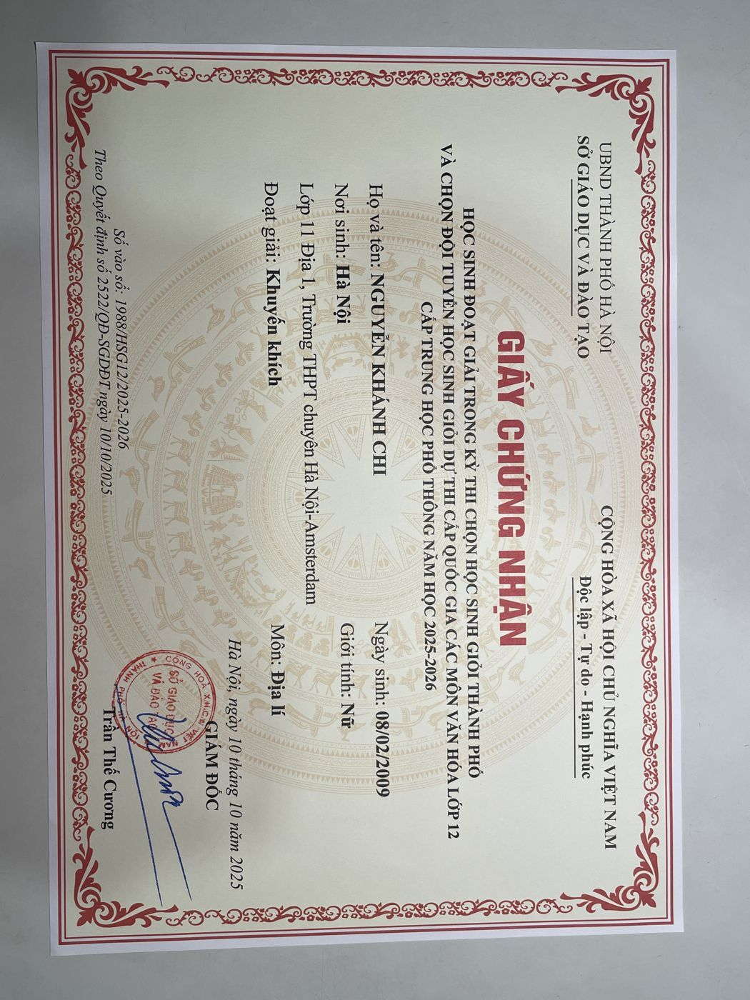
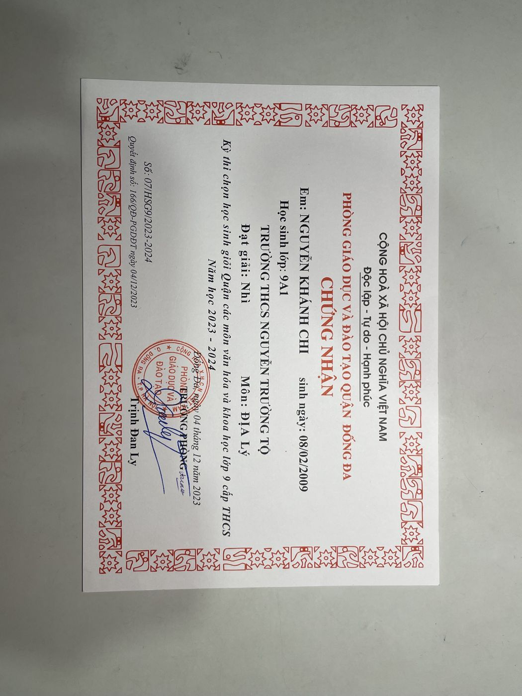
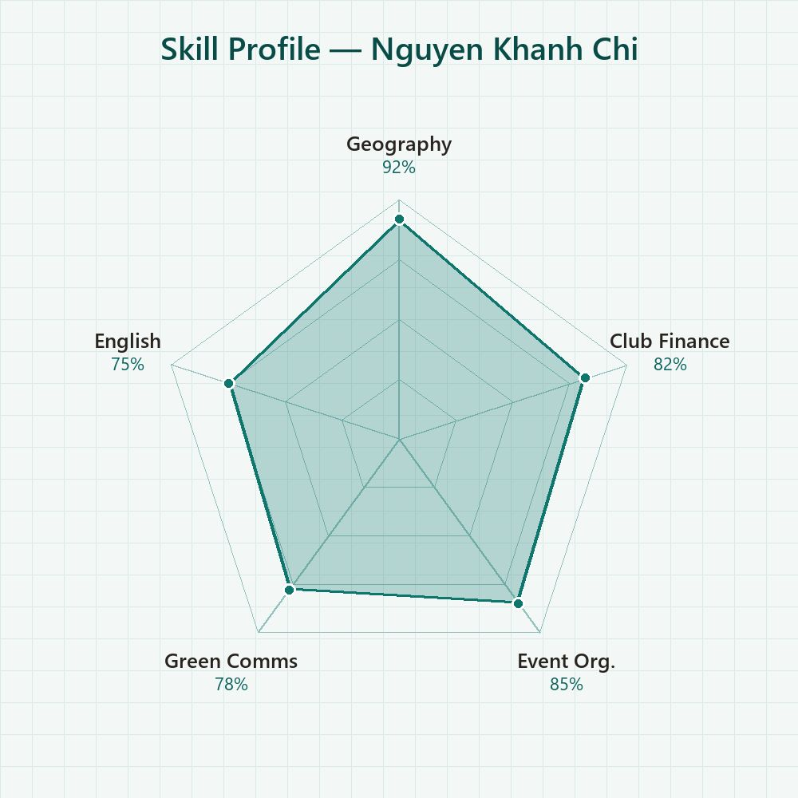

Giới thiệu
Mình là Nguyễn Khánh Chi, học sinh lớp 11 Địa 1, trường THPT chuyên Hà Nội – Amsterdam. Mình yêu thích môn Địa lý và đã đạt giải trong kỳ thi HSG Thành phố lớp 12 khi đang học lớp 11, cùng giải Nhì HSG cấp quận thời THCS. Mình là thành viên Ban Tài chính của Green Hanoi Amsterdam – câu lạc bộ môi trường của trường, tham gia tổ chức nhiều dự án như Green Life, Tết Ấm Áp, Camp Blast và Code of Culture. Mình cũng tham gia ICPC 2026 tại Hàn Quốc và chương trình thiện nguyện Mùa đông ấm.
“Hiểu Trái Đất là bước đầu tiên để bảo vệ nó.”
Hoạt động ngoại khóa & Dự án
Green Hanoi Amsterdam – Thành viên Ban Tài chính (2024–2025)
Thành viên Ban Tài chính CLB môi trường Green Hanoi Amsterdam; đóng góp tổ chức chuỗi dự án của CLB: Green Life 2024–2025, Tết Ấm Áp 2025, Camp Blast 2025: Miền Nắng Hạ và Code of Culture 2025.


{kind=link}
{kind=link}
{kind=link}
{kind=link}
ICPC 2026 – International Creative Papers Conference & Olympic (Hàn Quốc)
Tham dự hội nghị và cuộc thi sáng tạo ICPC 2026 do Korea University Invention Association tổ chức, 16–17/01/2026.
{kind=link}
{kind=link}
Thiện nguyện “Mùa đông ấm” 2025
Tham gia chương trình thiện nguyện Mùa đông ấm, quyên góp và trao quà ấm cho trẻ em vùng cao.
{kind=link}
Thành tích & Giải thưởng
Giải Khuyến khích kỳ thi chọn HSG Thành phố các môn văn hóa lớp 12 – môn Địa lí (2025–2026)
{kind=link}

Giải Nhì kỳ thi chọn HSG Quận các môn văn hóa và khoa học lớp 9 – môn Địa lý (2023–2024)
{kind=link}

Tham dự ICPC 2026 – International Creative Papers Conference & Olympic, Hàn Quốc
Kỹ năng
{kind=link}

Sở thích & Quan tâm
Định hướng tương lai
Mình muốn theo đuổi lĩnh vực Địa lý kinh tế hoặc Khoa học môi trường, kết hợp với kỹ năng tài chính – tổ chức tích lũy từ CLB để xây dựng các dự án phát triển bền vững. Mục tiêu lớp 12 của mình là nâng hạng giải HSG Thành phố môn Địa lí.
Hành trình
Giải Nhì kỳ thi HSG Quận Đống Đa môn Địa lý lớp 9 (THCS Nguyễn Trường Tộ, 12/2023).
Trúng tuyển lớp chuyên Địa, THPT chuyên Hà Nội – Amsterdam; gia nhập Ban Tài chính CLB Green Hanoi Amsterdam.
Cùng Green Hanoi Amsterdam tổ chức chuỗi dự án: Tết Ấm Áp (01/2025), Green Life 2024–25, Camp Blast: Miền Nắng Hạ (07/2025), Code of Culture (08/2025); Giải Khuyến khích HSG Thành phố lớp 12 môn Địa lí khi học lớp 11 (10/2025); thiện nguyện Mùa đông ấm.
Tham dự ICPC 2026 – International Creative Papers Conference & Olympic tại Hàn Quốc (01/2026).